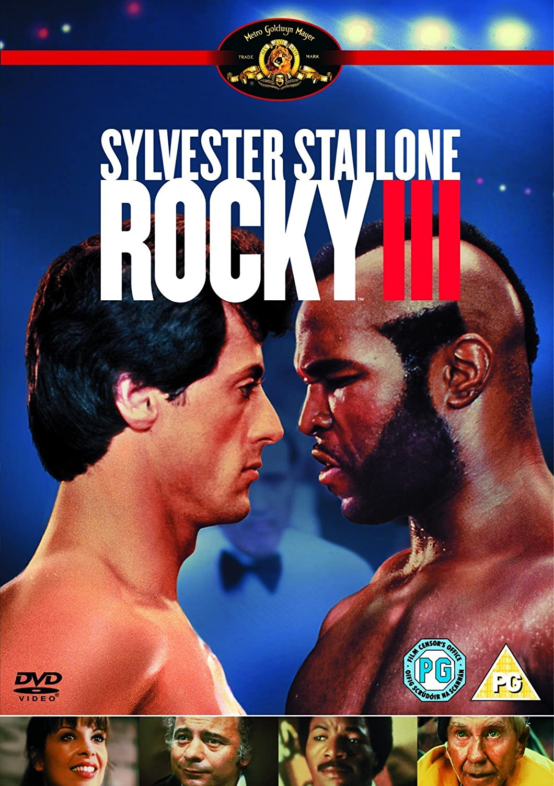

Rocky 3
Diretor: Sylvester Stallone
Com: Sylvester Stallone, Talia Shire, Burt Young, Hulk Hogan e Mr T
Censura:12 anos
Tempo de duração: 100 min
Sinopse: Após se sagrar campeão dos pesos pesados vencendo Apollo Creed, e defender seu título por dez vezes, Rocky Balboa (Stallone) decide largar sua carreira de pugilista, até ser desafiado e insultado por Clubber Lang (Mr. T), que era o primeiro do ranking e estava ansioso para enfrentar o campeão Rocky Balboa. No dia da luta, durante uma discussão entre Rocky e Clubber, o treinador Mickey sofre um ataque do coração e faz com que Rocky fique abalado e assim sofre uma derrota humilhante para o feroz desafiante Clubber Lang. Depois da luta, Mickey morre e Rocky cai em profunda depressão. Porém, Apollo Creed, seu antigo rival, ao compadecer-se de Rocky e tomar certa antipatia por Clubber Lang, oferece-se para ajudar Rocky e o convence a treinar para juntos retomarem o título de campeão mundial.